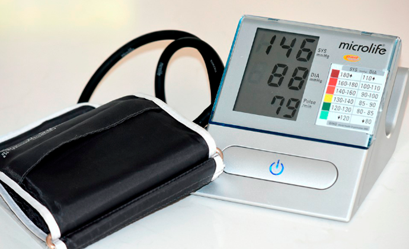

-
 Annet Pink10 Minuten zum Lesen
Annet Pink10 Minuten zum Lesen
Wie wird man den Bluthochdruck ohne Tabletten und Injektionen loswerden?
Hallo meine Lieben!
Ich heiße Anna, bin 52 Jahre alt und leide jahrelang an Bluthochdruck. Dabei hatte ich vor zusammen mit dieser Krankheit zu leben, bis ich eine hypertensive Krise bekommen habe. Sie brachte mich aber dazu meine Lebenseinstellung zu überdenken und mit der Behandlung des Bluthochdrucks zu beginnen. Inzwischen steigt mein Blutdruck schon lange Zeit nicht mehr über 130/80. Möchtet ihr erfahren, wie ich es geschafft habe?
WOHER KOMMT DER BLUTHOCHDRUCK?
Ich war Sportlerin, beschäftigte mich mich dem Schwimmen, führte einen gesunden Lebensstil. Der Blutdruck war leicht hoch. Meinen Vater kannte ich zwar nicht, doch meine Mutter sagte aber, dass er ebenfalls an hohem Blutdruck litt. Anscheinend habe ich diese Krankheit von meinem Vater geerbt.
Im Alter von 26 Jahren habe ich bemerkt, dass ich mich von einer Tasse Kaffee angefangen habe schlecht zu fühlen. Als es noch schlimmer wurde, ging ich sofort zum Arzt.

SCHLAG DIREKT INS HERZ
Es war ein sehr anstrengender Tag und ich habe mir eine Tasse Kaffee gegönnt. Zu Hause habe ich anschließend heftige Kopfschmerzen bekommen und fühlte mich sehr schlecht.
Das Ganze dauerte etwa 15 Minuten, was mir wie eine Ewigkeit vorkam. Ich habe mich zusammengerissen, kroch zum Telefon, habe einen Krankenwagen gerufen und verlor sofort das Bewusstsein.
KRANKENHAUSAUFENTHALT
Aufgewacht bin ich bereits im Krankenhaus. Zahlreiche Medikamente und schmerzhafte Verfahren haben mir geholfen mich zu erholen. Als ich das Krankenhaus verließ, ist mir klar geworden, dass ich kurz vor dem Tod stand.Wenn die Ärzte nicht rechtzeitig gekommen wären, wäre ich höchstwahrscheinlich gestorben.
Nach meiner Entlassung habe ich mir teure Medikamente gekauft, aber keine Wirkung verspürt. Ich fühlte mich immer schlimmer.

Ich wendete mich an verschiedene Ärzte, die mir alle die gleichen Medikamente verschrieben haben. Ich habe mir angefangen ständig Sorgen um meine Gesundheit zu machen und fühlte mich immer schlimmer. Der Blutdruck hat sich immer wider erhöht und die verschriebenen Medikamente hörten auf zu wirken. Ich wandte mich an die alternative Medizin, doch auch das hat mir nicht geholfen. Die Kräuter hatten nur eine vorübergehende Wirkung und ich wusste nicht mehr, was ich tun soll.
Ich konnte Nachts nichts schlafen und hatte schreckliche Kopfschmerzen. Ich musste ständig daran denken, dass der damalige Krankenhausaufenthalt tödlich enden könnte.

SUCHE NACH EINER BEHANDLUNG
Als ich wieder mal zum Arzt ging, habe ich zufällig meine Freundin getroffen, die als Krankenschwester arbeitete. Wir haben uns unterhalten, ich habe mich bei ihr über den Bluthochdruck beschwert, worauf sie plötzlich anfing Ärmel ihrer Bluse hochgekrempeln und zeigte mir ein kleines Gerät an ihrem Handgelenk. Es stellte sich heraus, dass sie genauso wie ich mehrere Jahre lang an hohem Blutdruck leidet und sich mit Hilfe dieses Geräts viel besser fühlt.

Darüber hinaus erzählte sie mir, dass sie seitdem sie ihn trägt, keine Kopfschmerzen mehr hat, nicht mehr so akut auf Wetteränderungen reagiert und sich insgesamt viel besser fühlt. Dieses Armband ist die neueste Entwicklung auf dem Gebiet der Medizin, die in ihrer Effektivität viel besser ist als Massagen, Kräuter und alternative Medizin zusammen. Das Gerät übt kleine und kurze Stromimpulse aus, wodurch die Durchblutung angeregt und die Blutgefäße gestrafft werden.
Das wiederum ermöglicht es dem Blut, die Bewegung im Körper zu beschleunigen: Die arterielle Hypertonie wird mit der Zeit beseitigt und der Blutdruck normalisiert. Das Gehirn wird vollständig mit Blut versorgt, der Herzmuskel pumpt eine ausreichende Menge Blut, was bedeutet, dass das Risiko eines Schlaganfalls und anderer mit Bluthochdruck verbundener Krankheiten minimiert wird.
Ich konnte nicht glauben, dass mir ein Arzt von Dingen erzählt, die für die meisten Menschen, die an Bluthochdruck leiden, verborgen sind!

Um ehrlich zu sein, konnte zuerst nicht daran glauben. Vielleicht ist sie einfach eine Vertreterin dieses Unternehmens?
Ich kam nach Hause und habe all diese Informationen über dieses Armband im Internet überprüft. Dabei habe ich folgendes herausgefunden.
Stromimpulse unterschiedlicher Stärke üben eine Wirkung auf die Wurzeln der Spinalnerven aus und straffen so die Gefäße für eine bessere Durchblutung. Durch das Auslösen der Stromimpulse werden die Nervenfasern angeregt. Dank dieser Wirkung verbessert sich die Mikrozirkulation im Körper und die zelluläre Ernährung nimmt zu, wodurch die Struktur und Funktion der Haut erhalten bleibt.
Die wissenschaftliche Daten und begeisterte Bewertungen von Kardiologiepatienten haben mich überzeugt und ich habe beschlossen das gerät doch noch zu bestellen.
Nachdem ich es ein paar Tage lang verwendet habe, sind die Kopfschmerzen plötzlich verschwunden. Ich wusste erstmals überhaupt nicht, was passiert ist . Als ich aber festgestellt habe, dass mir schon länger nichts mehr wehtut, ist mir endlich klar geworden, dass das Armband doch noch funktioniert.

Seitdem ist schon fast ein Jahr vergangen und sowohl die Kopfschmerzen, als auch Schwindelgefühle und die ständige Übelkeit sind völlig verschwunden. Ich bekam eine unglaubliche Kraft und einen Energieschub, was ich früher nicht hatte.
Wenn ich später einen Blutdruck von 170/100 hatte, liegt er jetzt bei 130/80. Nun kann ich mit Sicherheit sagen, dass mir das Gerät geholfen hat den Bluthochdruck endlich loszuwerden.
Seitdem ich dieses Armband benutze, hatte ich noch nie Kopfschmerzen gehabt. Ich kann das einfach nicht in Worte fassen, dieses Gerät hat mein Leben verändert!
Ich bin wieder aktiv geworden, habe wieder angefangen zu spazieren, Bücher zu lesen und bin ein ganz anderer Mensch geworden!

WO KANN MAN DAS ARMBAND ERHALTEN?
Ich bin so froh darüber, dass viele versuchen, die Fehler, die ich gemacht habe, zu vermeiden und sich noch vor derartigen Gesundheitsproblemen um die eigene Gesundheit zu kümmern. Ich hinterlasse also hier noch den Link auf die Webseite, auf der ich dieses Gerät bestellt habe. Bis gibt es übrigens noch eine Aktion. Passt auf euch auf, meine Lieben.


Wöchentlicher Newsletter
Abonnieren Sie unabhängige Nachrichten
von den besten Bloggern von LiveJournal